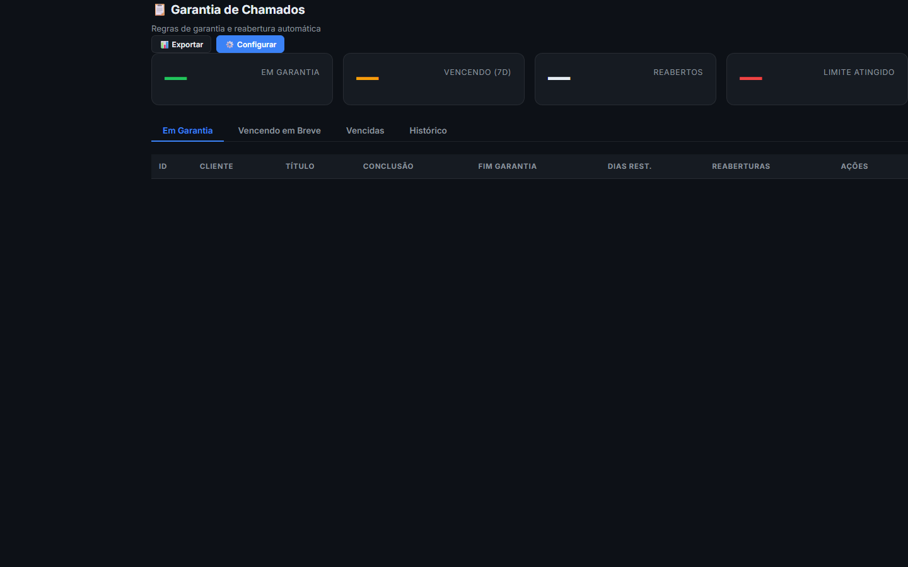

1Visão geral
O módulo de Garantia rastreia todas as garantias ativas dos equipamentos instalados pela Renostter, gerencia solicitações de cobertura e automatiza a reabertura de chamados quando há recorrência do mesmo problema.
Por que existe
Garantia é um tema crítico em HVAC. Sem sistema:
- Cliente liga reclamando "está na garantia" mas ninguém sabe a data exata de início/fim
- Técnico vai ao local, descobre que o problema é uso indevido (não coberto) — visita perdida
- Mesmo problema recorrente em 30 dias = defeito de fábrica, mas ninguém rastreia
- Reabertura de chamado é feita manualmente, sem histórico
O módulo resolve com: rastreio automático de prazos, regras claras de cobertura, alertas de vencimento, e reabertura automática quando o problema volta.
Quem usa
- Cliente — consulta se o serviço está na garantia, abre solicitação
- Técnico — verifica cobertura antes de ir ao local
- Coordenador — aprova/rejeita solicitações de garantia
- Gerente — KPIs de garantia (cobertura, reaberturas, custo)
2Tipos de garantia
A Renostter oferece 3 tipos de garantia em cada serviço:
| Tipo | Cobertura | Prazo padrão | Quando aplicar |
|---|---|---|---|
| Instalação | Defeitos de mão-de-obra (vazamentos, mau contato, fixação) | 90 dias | Toda instalação nova |
| Fabricante | Defeitos de fábrica do equipamento (compressor, placa, sensor) | 1 ano (ou conforme fabricante) | Equipamento novo |
| Estendida | Cobertura adicional além do fabricante (vendida como upgrade) | +1 ou +2 anos | Cliente compra (geralmente 10-15% do valor) |
Quando o técnico fecha o chamado de instalação (categoria = "instalacao") ou PMOC, o sistema cria automaticamente uma garantia com a data de início = data de fechamento e prazo conforme tipo.
3O que está coberto (e o que não está)
✅ Coberto
- Defeito de fabricação (compressor não liga, placa queimada, sensor falha)
- Mão-de-obra mal executada (tubo mal soldado, suporte mal fixado)
- Peça com defeito trocada na garantia do fornecedor (Renostter repõe)
❌ Não coberto
- Uso indevido — cliente mexeu no aparelho, usou em ambiente inadequado
- Falha elétrica externa — raio, queda de energia, surto
- Falta de manutenção — filtro sujo há 2 anos, gás acabou por vazamento antigo
- Desgaste natural — após 5 anos, compressor com barulho é normal
- Instalação por terceiros — se outro técnico mexeu, garantia Renostter é perdida
4Acesso rápido
- Sidebar → menu Operacional → Garantia
- URL direta:
http://localhost:3000/crm/admin/garantia.html - PWA técnico — consulta rápida em campo

5Lista de garantias ativas
A lista mostra todas as garantias ainda dentro do prazo, com:
- Cliente + equipamento (modelo, BTU, número de série)
- Tipo de garantia (instalação / fabricante / estendida)
- Data de início e dias restantes (com barra de progresso)
- Técnico que instalou
- Status (ativa, vencendo, expirada, reclamada)
- Ações: ver OS original, abrir solicitação, renovar
Status visual
| Cor | Status | Quando | Ação |
|---|---|---|---|
| Verde | Ativa (dias > 30 restantes) | Mais de 30 dias pela frente | Nenhuma |
| Amarelo | Vencendo (≤ 30 dias) | 30 dias ou menos restantes | Oferecer estendida ao cliente |
| Vermelho | Expirada | Prazo passou | Cobra visita técnica normal |
| Reclamada | Em análise de cobertura | Cliente abriu solicitação | Avaliar e aprovar/rejeitar |
6Como solicitar garantia
Quando o cliente liga dizendo "está na garantia":
- Na lista, encontre o equipamento dele (busque por cliente ou número de série)
- Clique no botão "Solicitar Garantia"
- Preencha o motivo (ex: "compressor não liga após 2 meses")
- Anexe fotos/vídeo do defeito (obrigatório para análise)
- Selecione a categoria (defeito, mau funcionamento, etc)
- Confirme — sistema abre um novo chamado marcado como "Garantia" e status "Reclamada"
Quando o sistema cria o chamado a partir da garantia:
- Já puxa dados do cliente, equipamento, histórico
- Marca prioridade como Alta (não crítica, mas importante)
- Notifica o coordenador para aprovar antes de enviar técnico
7Reabertura de chamado
Se o cliente abre um novo chamado com a mesma categoria do mesmo equipamento em até 30 dias após o fechamento do anterior, o sistema:
- Detecta o padrão (mesmo cliente + mesmo equipamento + mesma categoria + < 30 dias)
- Marca automaticamente como "Reabertura"
- Associa ao chamado original (link visível)
- Eleva a prioridade para Crítica (defeito recorrente = problema sério)
- Alerta o coordenador + gerente técnico
3+ reaberturas em 90 dias = provável defeito de fábrica. Aciona processo de RMA (devolução ao fabricante) + troca do equipamento sem custo ao cliente (reputação).
8Regras de reabertura automática
Configuráveis em Configurações > Regras de Garantia:
| Regra | Default | O que faz |
|---|---|---|
| Janela de reabertura (dias) | 30 | Considera reabertura se chamado novo abrir em até N dias |
| Prioridade automática de reabertura | Crítica | Força prioridade alta para reabertura |
| Reaberturas para RMA | 3 | Após N reaberturas, sistema sugere RMA ao fabricante |
| Notificar gerente técnico | Sim | Envia alerta a cada reabertura |
| Bloquear OS se garantia expirada | Não | Se sim, coordenador precisa aprovar antes de técnico ir |
9Workflow típico
Cenário: cliente instala split em janeiro, em março reclama que não gela.
- Cliente liga reclamando — atendente pergunta "quando instalou?"
- Atendente consulta o módulo Garantia — vê que está dentro do prazo (60 dias restantes)
- Atendente clica "Solicitar Garantia", preenche motivo, anexa foto
- Sistema abre chamado #00013 marcado como "Reabertura" (se aplicável) ou "Garantia"
- Coordenador aprova e atribui ao técnico disponível
- Técnico vai ao local, diagnostica — se for defeito coberto, executa sem cobrar
- Se for mau uso, técnico marca como "Não coberto" — cliente é informado via OS
- Técnico fecha o chamado — sistema marca garantia como "Utilizada" e atualiza histórico
10Boas práticas
✅ Faça
- Sempre verifique a garantia antes de aceitar visita particular (pode ser coberta)
- Documente bem a OS original — facilita provar uso indevido se necessário
- Anexe fotos no fechamento da instalação (estado do equipamento) — evidência em disputa
- Ofereça garantia estendida proativamente 30 dias antes de vencer
- Monitore reaberturas — 3+ em 90 dias = RMA
❌ Evite
- Não estenda garantia verbalmente sem registrar no sistema
- Não negue cobertura sem investigar — pode ser defeito de fábrica mesmo
- Não delete garantias do histórico — é prova legal em caso de processo
11API reference
GET /api/garantias
Lista garantias com filtros: status (ativa/vencendo/expirada), cliente_id, tipo (instalacao/fabricante/estendida), equipamento_id.
GET /api/garantias/:id
Detalhe completo + histórico de chamados relacionados.
POST /api/garantias
Cria nova garantia (geralmente automático quando instalação/PMOC é fechado).
POST /api/garantias
{
"equipamento_id": "<uuid>",
"tipo": "fabricante",
"data_inicio": "2026-07-21",
"prazo_dias": 365,
"nota_fiscal": "NF-12345"
}POST /api/garantias/:id/solicitar
Abre uma solicitação de garantia (cria chamado + marca como "Reclamada").
POST /api/garantias/:id/solicitar
{
"motivo": "Compressor não liga após 2 meses",
"categoria": "defeito",
"fotos": ["https://..."]
}POST /api/garantias/:id/aprovar
Coordenador aprova solicitação (autoriza visita técnica sem cobrança).
POST /api/garantias/:id/rejeitar
Rejeita solicitação (mau uso, fora do prazo, etc). Gera notificação ao cliente.
POST /api/garantias/:id/rejeitar
{
"motivo": "mau_uso",
"observacoes": "Filtro sujo há 2 anos, falta de manutenção"
}POST /api/garantias/:id/renovar
Estende a garantia (venda de upgrade).
POST /api/garantias/:id/renovar
{
"novo_prazo_dias": 365,
"valor_cobrado": 450
}GET /api/garantias/reaberturas?cliente_id=<uuid>
Detecta padrões de reabertura (mesmo equipamento + mesma categoria + < 30 dias).
GET /api/garantias/stats
KPIs: ativas, vencendo_30d, expiradas, reaberturas_90d, taxa_cobertura. Alimenta o BI.
• README geral · Chamados (integração direta)
• Contratos (PMOC vinculado)